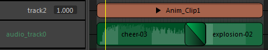

时间编辑器支持以下音频文件格式：
- .wav
- .aiff
注：
- Maya 不支持 .mp3 音频格式。
- 播放速度必须设置为“实时”(Real-time)，否则您只能在拖动时听到声音，但在播放过程中听不到。为此，请右键单击 Maya 的“时间滑块”(Time Slider)，并从“播放速度”(Playback Speed)选项中选择“实时”(Real-time)。
- 如果播放预览时发生音高变化，请设置“输入音频速率”(Input Audio Rate)设置以匹配“动画”(Animation)首选项（在“设置”(Settings)下）的“时间编辑器”(Time Editor)部分中的音频文件采样率。
- 您可以同时播放多个音频片段，但无法调节片段音量、权重、循环或保留片段。
- 对音频片段进行多次编辑时，Maya 的响应速度可能会很慢。这是因为在“节点图表”(Node Graph)中为片段的每个剪切部分创建了一个节点，这会导致重建解算图和播放缓存。如果出现响应很慢的情况，请禁用缓存播放(Cached Playback)
 。
。
将音频文件添加到时间编辑器
从“时间编辑器”(Time Editor)菜单栏中选择来打开文件浏览器，您可从中找到要加载到时间编辑器的音频文件。此时将创建音频轨迹。
此外，您还可以将音频文件拖动到轨迹编辑器时间视图的空白区域中。

放大可查看每个片段的音频波形。
时间编辑器中的音频偏移
您可以使用音频偏移在您的音频文件中构建延迟。例如，假定创建了一个小鸟在绷紧的绳上走动的动画，然后想要在小鸟走到绳子尽头的时候播放声音文件。如果已知小鸟走到绳子尽头时处于时间 108 处，就可以在“文件”(File)菜单的“声音文件偏移”(Sound file offset)字段中将声音文件偏移指定为 108。有关详细信息，请参见导入选项中的“音频”部分。
在时间编辑器中偏移一个音频片段
- 通过在“时间滑块”(Time Slider)的“播放选项”(Playback options)的“音量”(Volume)图标 (
 ) 上单击鼠标右键，然后选择“将音频片段导入到时间编辑器”(Import Audio clip to Time Editor)，导入音频。每个音频文件会在“时间编辑器”(Time Editor)中成为一个音频片段。
) 上单击鼠标右键，然后选择“将音频片段导入到时间编辑器”(Import Audio clip to Time Editor)，导入音频。每个音频文件会在“时间编辑器”(Time Editor)中成为一个音频片段。
- 使用所需偏移放置每个文件，或双击片段以访问其“属性编辑器”(Attribute Editor)选项卡并更改“偏移”(Offset)设置。